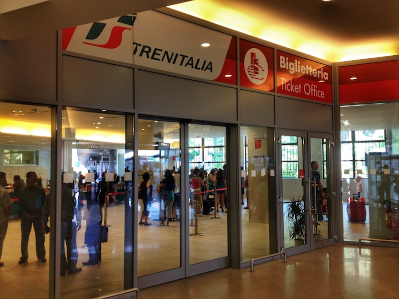

Photo by Francesca Tosolini
The Italian train system is very efficient and convenient if you have to cover long distances. In Italy, trains are very popular in everyday life. They are a common means of transportation for commuters, students, businessmen, etc. Taking the train in Italy can definitely get you closer to the Italian culture. The primary train operator in Italy is Trenitalia. A train ticket can be purchased at several locations, but, usually, the train station ticket office (biglietteria) is the place people prefer. It’s very important that you have a clear idea of the kind of ticket (biglietto) you want to buy (comprare). It may be a good idea to write the trip plan on a piece of paper (pezzo di carta) to show to the clerk, in case the language barrier makes the process too difficult. Keep in mind that most clerks speak only very basic English, so a note showing information such as the city or town of departure, the city or town of arrival, the date (data) and the time (ora) of departure and the number of people traveling in your party would be helpful. Another good idea is to have a map showing where you have to go and just pointing to the locations you want to travel to. If you are in a hurry, look for the Fast Ticket Window (Sportello Veloce). This is an option that may be very useful if you are just about to catch your train, but you still haven’t purchased your ticket. The Sportello Veloce ticket window is reserved for passengers whose train leaves within 15 minutes. I was one of those passengers once... My adrenaline was already going up when I saw this ticket window and literally ran to it. Fortunately, there were only two people in front of me. It wouldn’t have been my dream to spend two hours waiting at the Naples train station… Right now this service is available only in major train stations. Oh, and in case you wonder, credit cards are accepted. *** DID YOU KNOW? The ticket office is usually open from 6am to 9pm (in the major train stations), so buy your ticket the day before in case you have to catch an early train (and in case you wonder, yes, you can find many people waiting in line even at 6am…). Ticket office hours are listed on the Trenitalia’s website (choose a region and then click on the “Servizi in stazione- Biglietterie” link). *** {This is an excerpt from chapter 1 “General transportation” of the eBook “Italy from the Inside. A native Italian reveals the secrets of traveling in Italy”}